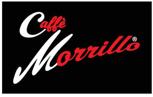
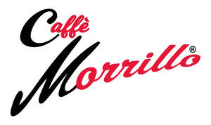

Trade Mark Journal No.2026/012 20 March 2026
UK00004292930 11 November 2025 (21,29,30,35,39)
Mark 1

Mark 2

- Class 21
- Coffee services of ceramic; Coffee services [tableware]; Coffee services of china; Coffee mugs; Coffee services in the nature of tableware; Coffee makers, non-electric; Coffee cups; Tea services [tableware]; Coffee pots.
- Class 29
- Drinks made from dairy products; Milk-based beverages containing coffee; Milk beverages with cocoa; Cocoa flavored milk beverages.
- Class 30
- Cocoa products; Coffee extracts for use as substitutes for coffee; Coffee beverages; Coffee beverages with milk; Coffee; Coffee, teas and cocoa and substitutes therefor; Coffee drinks; Beverages made from coffee; Beverages made of coffee; Mixtures of coffee essences and coffee extracts; Decaffeinated coffee; Prepared coffee and coffee-based beverages; Chocolate based products; Coffee flavourings; Coffee extracts; Coffee based drinks; Coffee capsules; Mixtures of coffee; Coffee mixtures; Chocolate coffee; Coffee beans; Flavoured coffee; Caffeine-free coffee; Beverages based on coffee substitutes; Freeze-dried coffee; Preparations for making beverages [coffee based]; Tea beverages; Mixtures of malt coffee with cocoa; Cocoa beverages with milk; Flavourings of tea for food or beverages; Mixtures of chicory for use as coffee substitutes; Mixtures of chicory for use as substitutes for coffee; Mixtures of coffee and chicory; Coffee pods; Unroasted coffee beans.
- Class 35
- Retail services in relation to coffee; Wholesale services in relation to coffee.
- Class 39
- Packing of food products; Packaging of products.
Domenico Gianni Morrillo a partner in V&M Morrillo and Sons
Costantino Michele Morrillo a partner in V&M Morrillo and Sons
Vittorio Morrillo a partner in V&M Morrillo and Sons
Maria Morrillo a partner in V&M Morrillo and Sons
Domenico Gianni Morrillo a partner in Morrillo’s Coffee Specialists
Costantino Michele Morrillo a partner in Morrillo’s Coffee Specialists
Vittorio Morrillo a partner in Morrillo’s Coffee Specialists
Maria Morrillo a partner in Morrillo’s Coffee Specialists